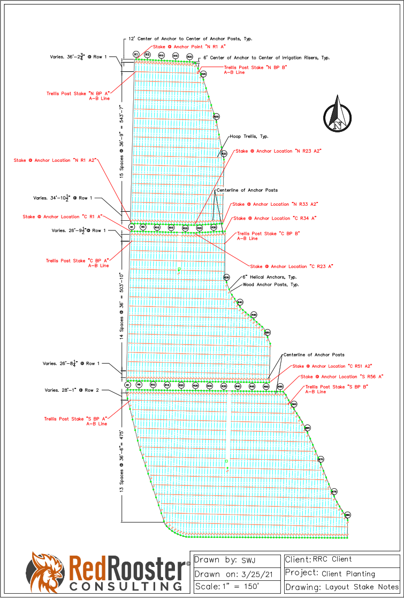

GPS Location and Staking
When it comes time to start implementing your planting design, Red Rooster Consulting can accommodate the means and methods you prefer in the process. You let us know which design features, (ex. anchors, posts, etc.) you would like to have marked, and we will locate and stake them prior to planting. At a minimum, there should be staked reference points to ensure that your planting is located properly and maximizes the workable acreage. RRC uses a Trimble R2® GPS receiver in combination with access to the Washington State Reference Network, resulting in up to 1-2cm accuracy for precisely locating your planting design features. This provides our clients many benefits, including:
- Stake indicators of the initial A-B line for the GPS tractor
- Stake indicators of critical features that need to be avoided during the planting project. For example, you would have a stake showing where newly installed main and submains are so they do not get damaged.
- Avoiding delays related to dependence on the GPS tractor by having RRC stake out any design features needed for the installation process
- Avoiding location and spacing issues (trees, vines, posts etc.) on sloped ground